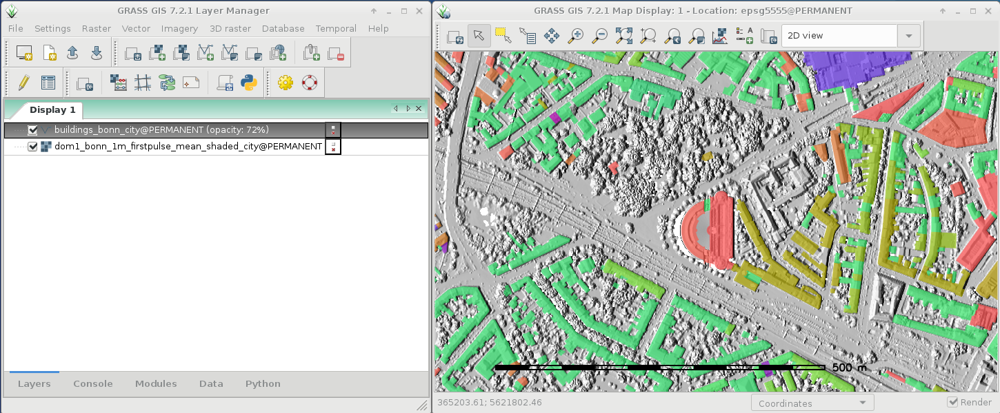
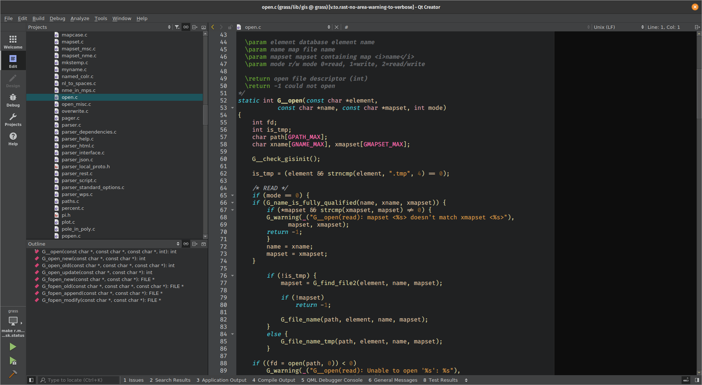

Stand des GRASS GIS Projekts: Nicht was Sie denken!
Markus Neteler (mundialis GmbH & Co. KG)
und Vaclav Petras, Anna Petrasova, Verónica Andreo

FOSSGIS 2024, Hamburg, 20. - 23. März 2024
Über den Sprecher...
- Mitgründer + Senior Consultant bei mundialis, Bonn (DE)
- Seit 2016 in Bonn, Deutschland @ mundialis
- Jahrelang als Wissenschaftler in Trento, Italien
- Seit 1997 aktiv im GRASS GIS Projekt
- Mitbegründer von OSGeo, GFOSS.it und FOSSGIS e.V.

Community
Ein großer Dank an die ganze Community!Was ist GRASS GIS heute?
GRASS GIS hat doch nur eine Kommandozeile, oder?

GRASS GIS ist doch nur ein Desktop-GIS, oder?

Möglichkeiten der Nutzung
Python
GRASS GIS hat eine Python API.
R
rgrass Paket, um GRASS GIS von R zu nutzen, ist auf CRAN.
QGIS
GRASS Werkzeuge sind hier über das Processing Plugin(GUI und Python) zugänglich.

Kommandozeile
- Interaktive Shell
- Für Einzeljobs oder Batchprozessierung mit
--exec
Cloud
- Python
- actinia
- OpenPlains
Graphische Oberfläche (GUI)
Kein Startup screen
Der frühere Startup screen war ein Hindernis für viele Nutzer:innen.Projekt sofort laden
Desktop GRASS GIS öffnen sich sofort mit einem Projekt(das letztgenutzte oder default).

Aufgeräumtes Daten-Management
Der neue Daten Reiter ist ein zentraler Platz, um Daten in einem Projekt zu bearbeiten.Der Begriff Location wird bald in Projekt geändert
-
/home/joanna/grassdata(database directory, path)-
hamburg(location → project)neuer_radweg(mapset, sub-project)
-
Viele Fenster
Früher gab es nur separate Fenster.Es gibt sie immer noch, aber …
Einzelfenster GUI
Heutzutage ist das Einzelfenster der Standard.Herzlichen Glückwunsch zum 40., GRASS GIS!

Zeit, etwas Verwirrung aufzuklären in Bezug auf das Alter
Mythos: Das Projektbudget
Es gibt GRASS GIS schon so lange, also muss es gut finanziert sein
Mythos: Wie stellen wir uns eine:n GRASS Entwickler:in vor

Wohlsituierter Professor, der über neue Methoden nachdenkt
Die echten GRASS GIS Entwickler:innen

Beschäftigte Eltern, die nebenbei Source Code analysieren
Als Vashek das Bild schoss
NSF-Förderung unter Federführung der NC State University
- NSF-Zuschuss an NC State, ASU, NMSU und Yale vergebene
- zur Verbesserung der Infrastruktur
- Überarbeitung der Richtlinien für die Beiträge
- Unterstützung des Aufbaus einer Gemeinschaft
Hinweis: Das NSF-Programm zielt auf Nachhaltigkeit ab, nicht auf das Hinzufügen von Funktionen oder die Behebung von Fehlern.

Echt: Neue Finanzierungsmöglichkeiten über OpenCollective
-
Spende (einmalig, jeder Betrag), Unterstützer ab 10 USD/Monat, Sponsor ab 500 USD/Jahr

- Rückmeldung? Sprechen Sie mit mir!

(https://opencollective.com/grass/contribute)
Noch einmal für's Handy
(https://opencollective.com/grass/contribute)
Releases
Mythos: Es gibt keine neuen Versionen mehr, oder?
- 8.3.2 Current, März 2024: Aktuelle Version für den täglichen Gebrauch
- 8.4.0 Preview, täglich: Aktuell überprüfter funktionierende Version
- 7.8.8 Legacy, August 2023: (Noch) gepflegte Legacy-Version für einige Produktionssysteme
Minor Releases bringen neue Dinge: x or y?
Minor Releases
- major.minor.micro
- micro (x.y.z) bringt Korrekturen,
- minor (x.y) bringt neue Funktionen,
- major (x) bringt Funktionen und möglicherweise rückwärtskompatible Änderungen

Der Source Code
C and C++ Code Qualität: 3.400 Dateien
- Von GCC und Clang gemeldete Probleme wie dangling-else, discarded-qualifiers, format, ... behoben
- Im Jahr 2024 wird es noch mehr geben.

Python Qualität: 830 Dateien
- Code mit Black formatiert.
- Flake8 aktiviert, 2/3 sind korrigiert.
- Pylint teilweise aktiviert.
- Angestrebt wird eine annähernd standardmäßige Konfiguration für 2024.

Features
Von den Profis seit langem geforderte Funktionen sind jetzt verfügbar und ausgereift (und normalerweise von Desktop-Benutzern übersehen).GRASS-Sitzung in Python verwalten
Die überarbeitete GRASS-Sitzung macht es einfacher, GRASS-Werkzeuge von Python aus zu nutzen.
Kommandozeilen-Batch-Modus mit --exec
Optimierte Nutzung von GRASS-Werkzeugen durch Systemaufrufe.
grass /grassdata/nc_spm/work1 --exec \
r.viewshed input=elevation \
output=viewshed coordinates=642964,222890
Befehlsbeschreibung mit --json
- Übersetzt Befehlszeilenparameter in JSON.
- Wird von actinia zur Integration mit GRASS GIS verwendet.
- Wir suchen nach Feedback für andere Anwendungsfälle.
r.viewshed \
input=elevation \
output=viewshed \
coordinates=642964,222890 \
--json
Datenanalyse-Workflows mit Jupyter notebooks
Siehe unser mundialis Workshop!
Oberflächenklassifikation aus Luft- und Satellitenbildern mit Hilfe von actinia
Workshop 3 (D.013), 21 März 2024, 09:00–10:30

Binder Demo: tinyurl.com/grass-jupyter-8-3
Community Meeting 2023
GRASS GIS feierte den 40. Geburtstag mit CMake Build, 8.3.0 Release … grass.osgeo.org > News > Report of the GRASS GIS Community Meeting in Prague
grass.osgeo.org > News > Report of the GRASS GIS Community Meeting in Prague
Mentoring und Stipendienprogramm für Studierende
- Mentoring zur Integration von GRASS GIS in Ihre Arbeitsabläufe
- Stipendien für Studierende zur Mitarbeit an GRASS GIS

Beitritt zu einer Arbeitsgruppe
-
Arbeitsgruppen:
- Geoprocessing engine
- gute Nachbarn im Open-Source-Ökosystem sein
- Dokumentation
- Engagement und Förderung der Gemeinschaft
- Siehe wiki für Details!

github.com/neteler/grass-gis-talks-markus
@netelerMarkusNeteler